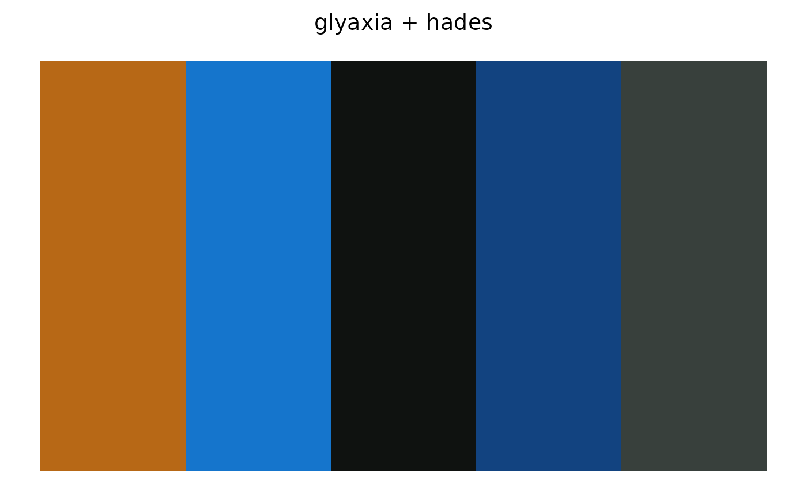
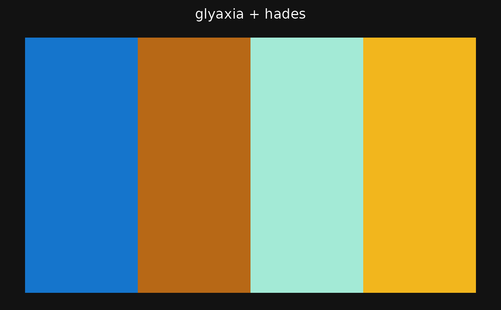
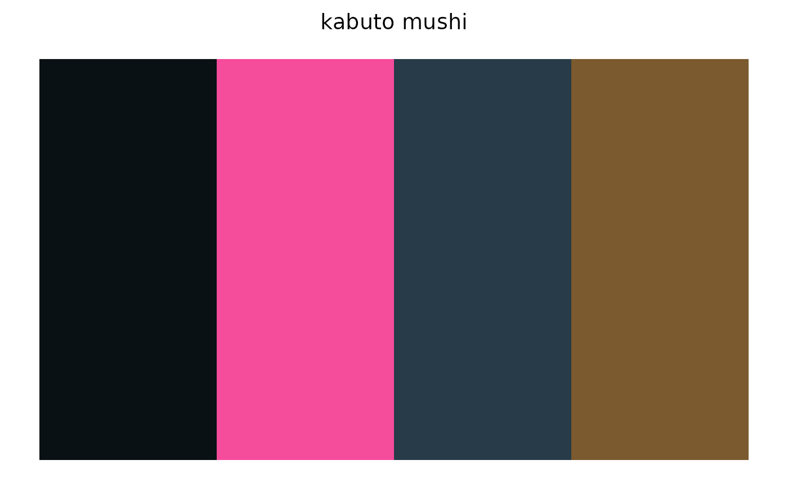
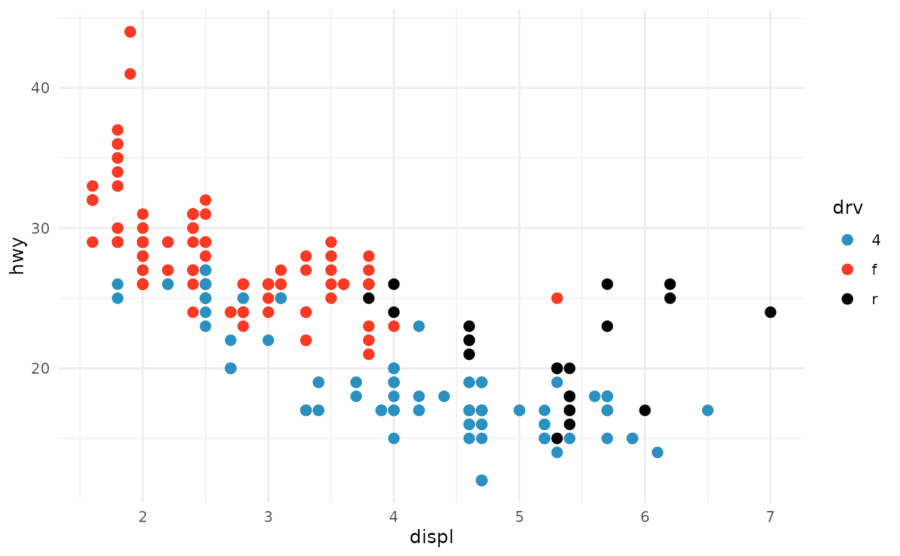

Pools the colors of the named palettes and selects the n that are
hardest to confuse with one another on a given kind of plot: light
background, dark background, or output that will be read in grayscale.
Optionally judges distinctness under simulated color-vision deficiency.
Use it when a single colorway does not have enough usable colors, or when
you want a company's or a product line's colors but only the ones that
hold up on a chart.
Usage
glyos_pick(
palettes = NULL,
n = 5,
style = c("light", "dark", "grayscale", "greyscale"),
colorblind = FALSE,
company = NULL,
line = NULL,
background = NULL,
min_contrast = 3
)Arguments
- palettes
Character vector of one or more palette names; see
glyos_palette_names(). May be omitted whencompanyorlineis given.- n
Number of colors wanted.
- style
One of
"light"(white background),"dark"(near-black background) or"grayscale"(white background, judged by lightness alone)."greyscale"is accepted as a spelling alias.- colorblind
Logical. Require the colors to stay distinct under simulated deuteranopia, protanopia and tritanopia?
- company, line
Optional filters passed to
glyos_palette_names(); every matching palette is added to the pool.- background
Optional background color overriding the one implied by
style, as a hex string.- min_contrast
Minimum WCAG 2 contrast ratio a color must have against the background to be considered. Set to 1 to disable the filter.
Value
A character vector of n hex colors with class "glyos_palette",
named by the palette each color came from, and with attributes
min_distance (smallest pairwise distance under the chosen criterion),
style, colorblind and background.
Details
The selection runs in three steps.
Pool. The colors of every palette in
palettes(plus every palette matchingcompanyandline, if given) are combined, with duplicates removed.Filter for the background. Colors whose WCAG 2 contrast ratio against the background is below
min_contrastare dropped, so a light-mode selection never contains a near-white and a dark-mode selection never contains a near-black. The background is white for"light"and"grayscale"and near-black ("#121212") for"dark"unlessbackgroundis given. The default of 3 is the WCAG minimum for graphical objects; lower it to keep more colors, raise it for text.Choose. Every pair of remaining colors is scored by its distance in CIE Lab (CIE76). With
colorblind = TRUEthe distance is the smallest of the normal-vision distance and the distances after simulating deuteranopia, protanopia and tritanopia (Machado, Oliveira and Fernandes 2009), so two colors only count as distinct if every viewer can tell them apart. Withstyle = "grayscale"only the lightness difference counts, so the colors survive conversion to gray. Thencolors whose closest pair is farthest apart are chosen (a maximum-dispersion subset, found exhaustively when the pool is small and by greedy seeding plus swap search otherwise), then ordered so that each color is as different as possible from those before it.
The result is a categorical palette: it does not try to build a gradient.
The smallest pairwise distance in the selection is returned as the
min_distance attribute; values above about 20 are comfortably distinct,
and below about 12 two colors will be hard to tell apart. If the pool
cannot supply n colors after filtering, the function errors and says
how many it had, so add palettes or lower min_contrast.
See also
glyos_combine() to take one color from each of a set of
palettes without filtering; glyos_find_palettes() to shortlist whole
palettes; glyos_palette_stats() for the underlying measures.
Examples
# five colors for a white-background plot, from two classic colorways
glyos_pick(c("glyaxia", "hades"), n = 5)
#> Glyos pick of 5 colors from glyaxia + hades
#> light background #FFFFFF, min distance 21.3
#> glyaxia = #B76816
#> glyaxia = #1575CC
#> hades = #0F1210
#> glyaxia = #124380
#> hades = #38403C

# the same for a dark theme, and color-blind safe
glyos_pick(c("glyaxia", "hades"), n = 4, style = "dark", colorblind = TRUE)
#> Glyos pick of 4 colors from glyaxia + hades
#> dark background #121212, colorblind-safe, min distance 27.8
#> glyaxia = #1575CC
#> glyaxia = #B76816
#> hades = #A3EAD6
#> glyaxia = #F2B61D

# a whole product line, printable in grayscale
glyos_pick(line = "Kabuto Mushi", n = 4, style = "grayscale")
#> Glyos pick of 4 colors from kabuto mushi
#> grayscale background #FFFFFF, min distance 16.9
#> kabuto_scarabite = #0A1114
#> kabuto_radioactive = #F54C9C
#> kabuto_cerulestar = #273B48
#> kabuto_standard = #7A5A2E

library(ggplot2)
cols <- glyos_pick(company = "Toyfinity", n = 3, colorblind = TRUE)
ggplot(mpg, aes(displ, hwy, color = drv)) +
geom_point(size = 2.5) +
scale_colour_manual(values = unname(cols)) +
theme_minimal()
